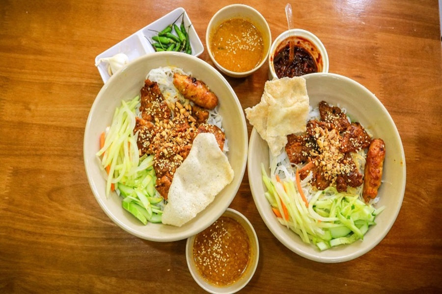
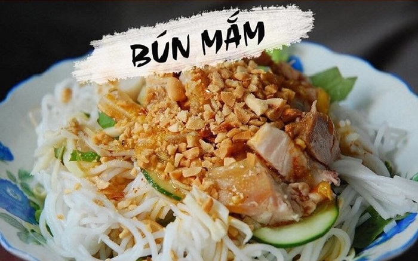

More information
Bánh xèo
Bà Dưỡng
The banh xeo here are all crispy on the outside, generously filled with shrimp or meat, and served with a flavorful minced meat dipping sauce.
Open: 9:30 am
Close: 9:30 pm
Bánh xèo
Năm Hiền
Năm Hiền Quán has a spacious and clean environment. The banh xeo here is enticing due to its hot and fragrant nature, with a crispy texture from the rice flour. You can choose between the shrimp-filled or beef-filled banh xeo as they are the two most popular dishes at Năm Hiền.
Open: 10:00 am
Close: 10:00 pm
Bánh xèo
Bà Ngọc
Bà Ngọc Quán offers a very appealing menu of Da Nang-style banh xeo and nem lụi (grilled pork skewers). The standout feature of the restaurant is the sweet and tangy dipping sauce, which helps reduce the greasiness and enhances the taste experience for diners when trying various Da Nang snacks here.
Open: 8:00 am
Close: 2:00 pm
Mỳ Quảng Bà Mua
When you visit Mì Quảng Bà Mua, you not only get to enjoy a delicious bowl of aromatic noodles but also experience a spacious and refreshing atmosphere, elegant interior, and a team of polite and professional staff who provide excellent service. It's a suitable place for families, gatherings with friends, and more.
Open: 6:30 am
Close: 9:00 pm
Mỳ Quảng Bà Vị
QMì Quảng is a famous restaurant in Da Nang known for its authentic and distinctive flavor. The establishment has a secret recipe for its broth, which has been passed down through generations in the family.
Open: 6:30 am
Close: 9:00 pm
Mỳ Phú Chiêm
This place is highly suitable for students. The broth here is sour, spicy, salty, and sweet, perfectly balanced in flavors. The restaurant offers a comfortable and airy space. There's no reason not to give it a try, my friends!
Open: 5:45 am
Close: 11:30 pm
Bánh Tráng Cuốn
Thịt Heo Bà Mua
Bà Mua is not only famous among tourists for its delicious Mì Quảng, but it is also known for its incredibly tasty Bánh Tráng Cuốn (rice paper rolls) with pork.
Open: 6:30 am
Close: 9:00 pm
Quán
Bà Hường
Bà Hường Quán is a long-standing and famous establishment in Da Nang when it comes to Central Vietnamese specialties, including the irresistibly delicious Bánh Tráng Cuốn (rice paper rolls) with pork.
Open: 8:00 am
Close: 9:00 pm
Bánh Tráng Thịt
Heo Đại Lộc
Paired with handcrafted rice paper rolls that are both flexible and rich in the flavor of Central Vietnamese rice, Bà Hường's restaurant offers a diverse selection of fresh vegetables that bring a taste of the countryside, such as lettuce, banana blossom, fish mint, bean sprouts, and mung bean sprouts.
Open: 10:00 am
Close: 10:00 pm
Bún thịt nướng Đà Nẵng 19
When you're feeling extremely hungry in the afternoon, what could be better than enjoying a bowl of high-quality grilled meat vermicelli noodles with all the delicious toppings from Quán 19? It will undoubtedly satisfy your growling stomach and leave you completely satisfied.
Open: 10:00 am
Close: 10:00 pm
Bún thịt nướng ở chợ Cồn Đà Nẵng
The grilled meat vermicelli noodle stall located inside Cồn Market in Da Nang captivates customers with its enticing aroma of grilled meat. The bowl of vermicelli noodles is generously filled with thick-cut meat and accompanied by fresh and abundant vegetables.
Open: 7:00 am
Close: 5:00 pm

Bún thịt nướng Bà Trai Đà Nẵng
The restaurant's menu features three signature dishes: grilled meat vermicelli noodles, beef wrapped in betel leaf (bò lá lốt), and grilled pork skewers (nem lụi). The grilled meat vermicelli noodles here are exceptional, particularly due to their rich and flavorful dipping sauce, making them incredibly satisfying to eat.
Open: 1:00 pm
Close: 10:00 pm

Bánh Canh
Ruộng
This dish is a specialty closely associated with the rural life of many generations, so its ingredients are not extravagant. Despite being prepared in a simple manner, the flavor of Đà Nẵng's countryside-style bánh canh (thick rice noodle soup) is incredibly unique, leaving a lasting impression after just one taste.
Open: 11:00 am
Close: 9:00 pm
Bánh canh tôm tít Biển Thọ Quang
When it comes to Đà Nẵng's specialties, one cannot overlook the Biển Thọ Quang restaurant known for its bánh canh (thick rice noodle soup) with fresh small shrimp. The broth here has a uniquely sweet and clear flavor derived from the fresh live small shrimp.
Open: 6:00 am
Close: 5:00 pm
Bánh Canh
Hiền
If you're already familiar with the bánh canh dishes in Đà Nẵng made from fish cakes or shrimp, you can explore a new and unique flavor by trying the bánh canh with duck at Quán Hiền.
Open: 10:00 am
Close: 9:00 pm
Bún chả cá bà Lữ Đà Nẵng
Guests can choose from various fillings such as mackerel fish cake, snakehead fish cake, tuna fish cake, and more. The fish cake fillings here are made with a unique recipe that brings a delicious and flavorful taste, leaving a lasting impression on diners.
Open: 7:00 am
Close: 12:00 am
Bún Chả Cá Bà Ân Đà Nẵng
Bà Ân's bún chả cá (fish cake vermicelli noodle soup) has long been a familiar breakfast spot for the people of Đà Nẵng. What sets this place apart is that it stays open all day until midnight, allowing diners to visit and enjoy their meal at any time.
Open: 6:00 am
Close: 12:00 pm
Bún chả cá Phan Tứ
I'm glad to hear that you enjoy this restaurant for your breakfast. The broth of the bún chả cá at Bà Ân is known for its rich and sweet flavor, derived from the fish and various accompanying ingredients. Moreover, the prices are student-friendly, making it an ideal choice for students.
Open: 6:00 am
Close: 9:30 am

Gỏi cá Nam Ô Bà Hiền
Bà Hiền gỏi cá (fish salad) restaurant, located on Nguyễn Tất Thành Street, is a popular eatery that is always bustling with customers. The restaurant offers both wet fish salad (gỏi cá ướt) and dried fish salad (gỏi cá khô) options for customers to choose from.
Open: 1:00 pm
Close: 10:00 pm
Chè Phước
Trang
The restaurant offers a wide variety of chè (Vietnamese sweet desserts). During hot weather, you can enjoy refreshing and chilled chè, while during cold weather, you can opt for warm chè. Offering a delicious and balanced sweetness without being overly sweet.
Open: 3:00 pm
Close: 10:00 pm

Bún mắm nêm chợ Bắc Mỹ An
Bún mắm is a delicious dish that consists of roasted peanuts, boiled pork, and fresh and tasty raw vegetables such as lettuce, bean sprouts, herbs, and more. The dish is then topped with a special shrimp paste sauce called mắm nêm, which brings a rich and distinctive flavor.
Open: 1:00 pm
Close: 6:30 pm